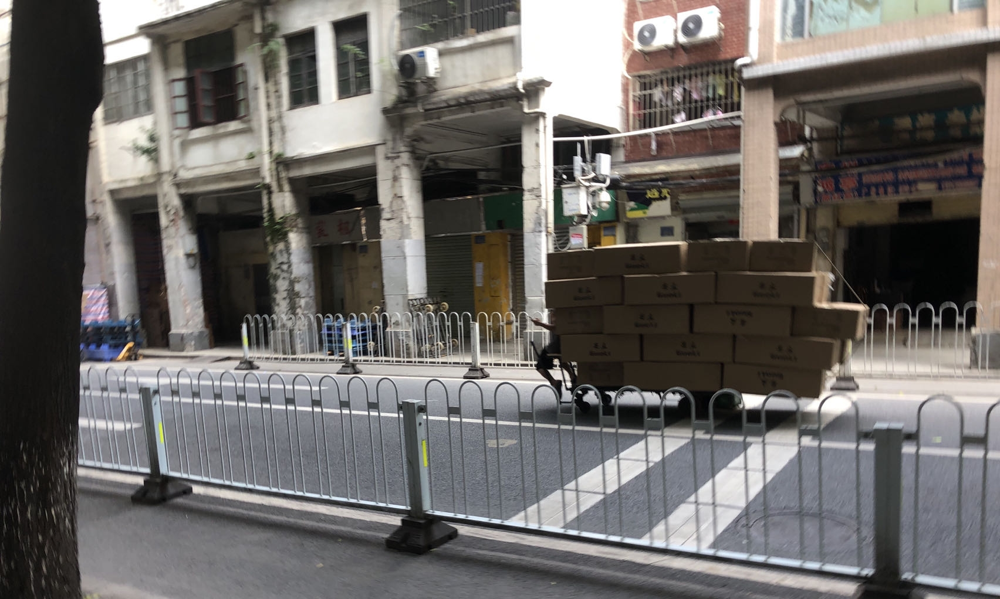
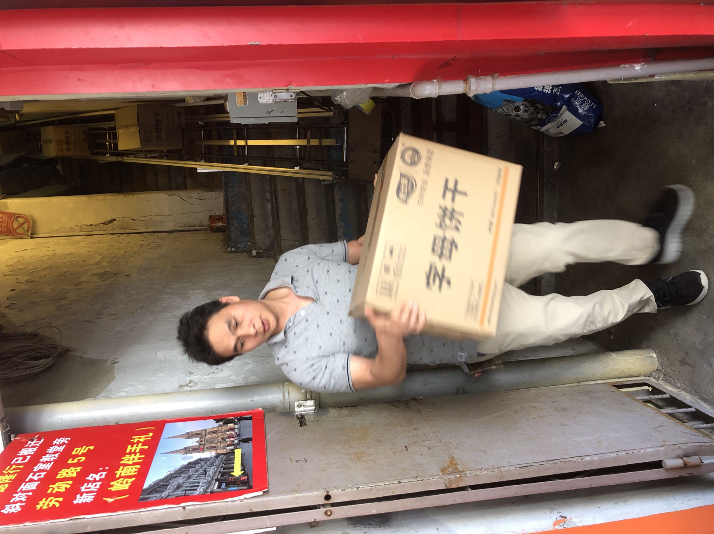
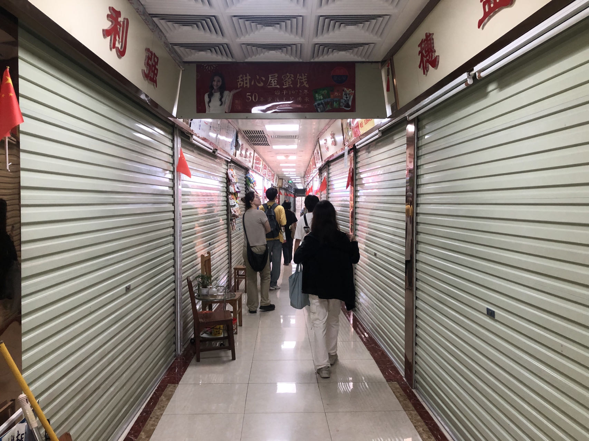
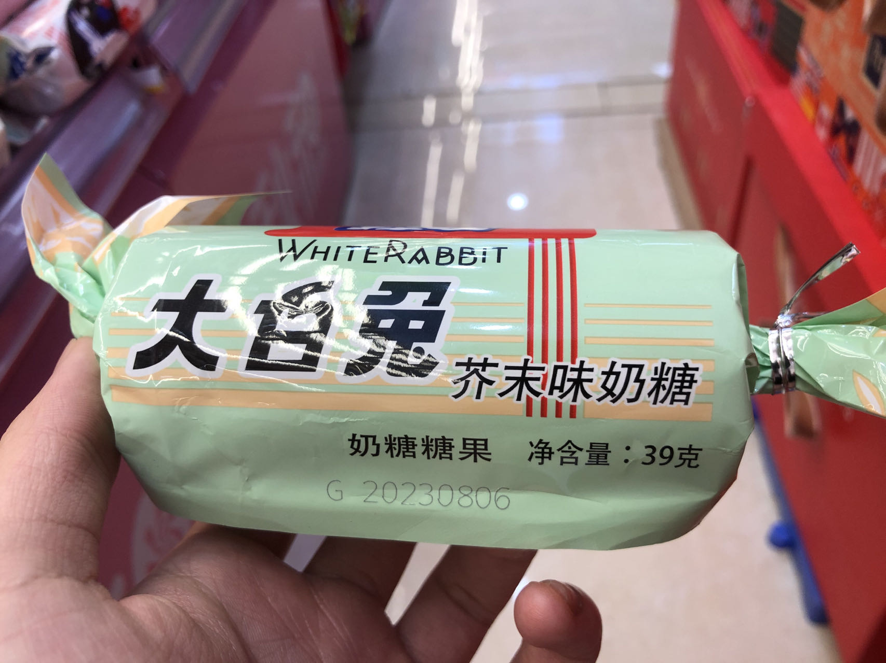
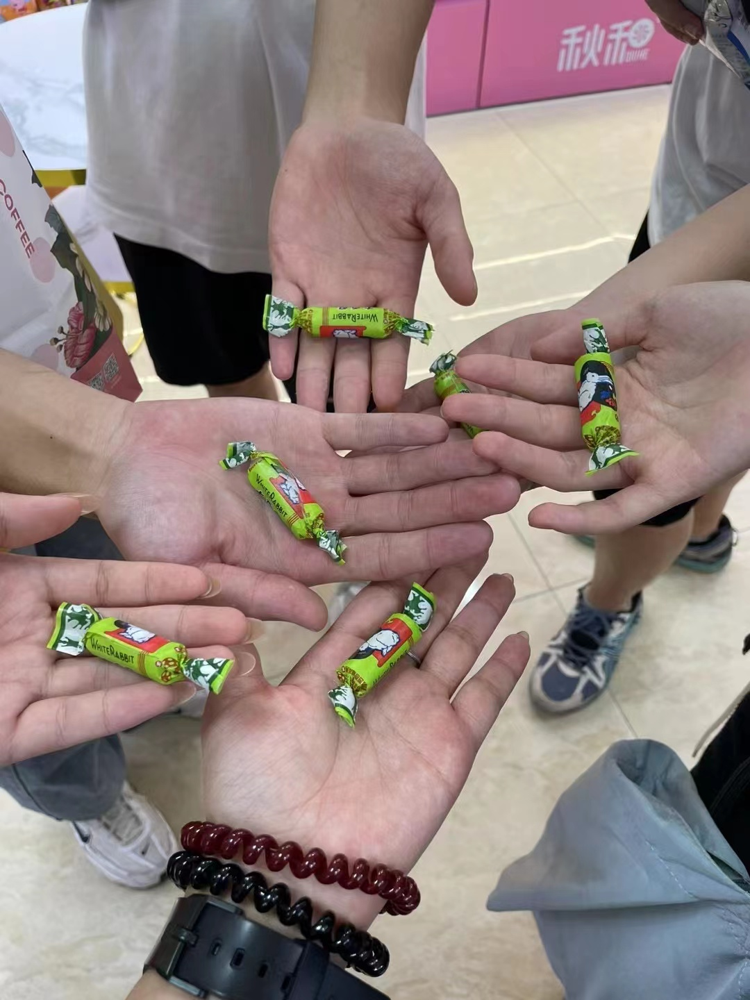
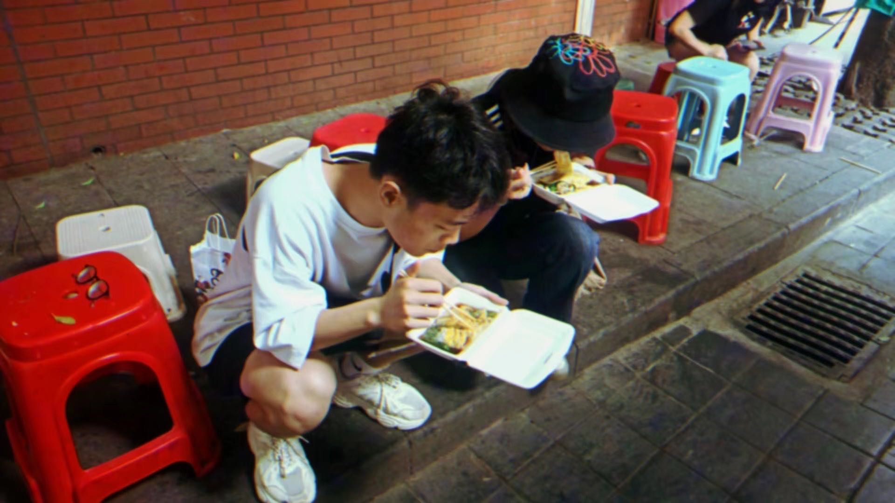
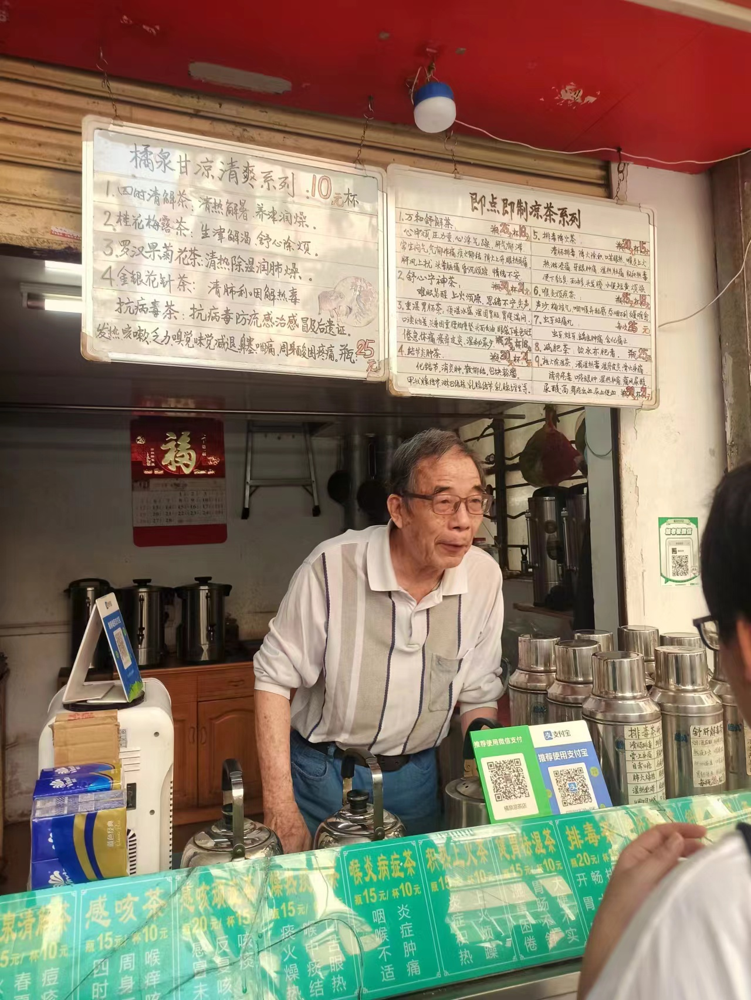
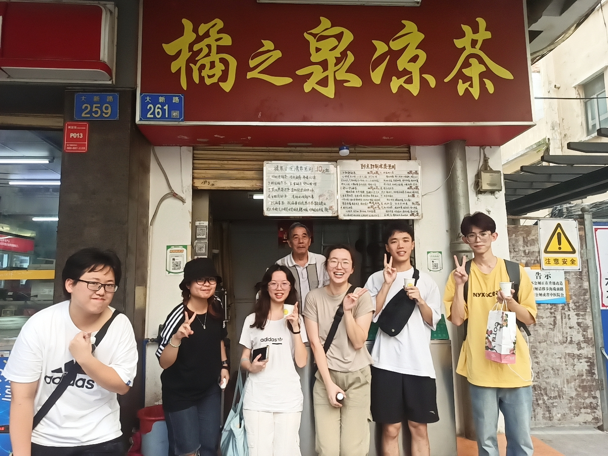

前言
越秀区给人以一股闲适的感觉。
今天的田野调查课程和第一次在康鹭村做的调查带的心态完全不同。前一次进入康鹭村时，我时时在心中自问：我能发现一些什么？我能写一些什么？如果说第一次田野调查在形式上似乎像是“调查”本身，那这一次调查在形式上便如同政阳所说的“漫步”。
漫步在田野中，我的研究对象实际上从本地居民，变为了我的伙伴以及我自己。
并不是埋汰自己，我对自己有着还算清醒的认知——我的社会学想象力仍十分贫瘠，面对形形色色的社会现象，我的思考既没有敏锐性，也没有穿透力。在越秀批发市场逛了许久之后遇上松哥，我才注意到附近有很多仓库，如果稍微关注一下经过的路人，你或许会发现他/她的摩托车后座上有一块放货物的大木板。用松哥的话来说，这是附近仓库与贸易中心较多的缘故。


松哥的想法好像总是源源不断，讲完周边仓库较多的特点以后，还提到了附近有个很干净的二楼公厕，以及一棵被阻碍生长的大树。我没有记住他讲话的细节，但能明显感受到他对事物观察的敏锐度。相比而言，我好像只是行走于此间，没有想法，没有收获，田野调查成为走马观花式的闲逛。
“近”-田野让我傍近大家
我将目光放回身边的小伙伴身上，也放回到了自己的身上。兵哥说，“跟着感觉走”，倘若我想安慰自己并非一无是处（事实上我安慰了自己），我认为，当下我对田野的感受是“近”的，借用费孝通先生差序格局的概念，我所能看见的田野正位于最靠近自己的波纹中。

我们走的这一带路几乎都是交易市场和仓库。走进一家卖糖果和饼干的店面，大家都开始驻足观看起来。说起来，如果不是因为我们在漫步田野——既没有明确的目的，但又并非毫无目的，而是随性又不随意地去观察和感受，我也不会同大家停下来。
我突然发现身边的朋友对待生活有着我所缺乏的某种敏感。这事情说起来还挺玄，如果不细致拿来推敲，难免会模糊掉别人的面容——事实上我们大多数人都是这么做的，有哪些因素导致我们越来越习惯用固定的几个框架看待他人？竞争因为赛道的匮乏而容易走向恶性，同质性的眼光也可能让我们不自觉物化他者——ta是否能帮助我，ta是否对我存在威胁？
政阳比我更靠近生活。走到商品货架的时候，他会好奇地端详不同的糖果和饼干，直到他发现了一包芥末味的大白兔糖果。

政阳买下了这包糖果，拆开以后分给我们，我们也从打开糖果开始，彼此之间话多了起来。但当大家聚在一起围着这么一包有点超出常识存在的零食时，我却有股异样的感觉。

糖果将我们联系了起来。这不是第一次，偶尔去上课的时候，贝尔、政阳、晓琳还有力伟都会捎一些零食来分给彼此（我们从社区实践这门课开始组了小组，成员有晓琳、贝尔、肖奕、政阳、力伟和我），比如政阳在老家自己亲手做的馅饼和贝尔带包装的饼干。每次收到零食时，我都受宠若惊，但也感到莫名的亲切。
现在回想起来，我简直是一块木头。在我的生活世界里，我对美食没有探索的欲望，进而也从未想过要给身边的朋友分享什么美食。分享欲望的缺席，又如同我对美食的钝感，意味着与他人乃至生活联系能力的羸弱。反过来想，政阳和晓琳带图片的朋友圈里出现得最多的是美食，他们发现美食并主动和我们分享也并不令人意外。就这一层来讲，他们和生活本身的距离比我更近——我更喜欢生活在抽象的世界里，分不清自己究竟是否在向庞大的学术体系让渡自己的独立思考。
于是，当我看到政阳和大家都乐意端详不同店铺的零食时，我看到的不仅是他们彼时的状态和动作，还有这背后人与人的联系。
贝尔也是让我很吃惊的同学。她是一个很会照顾他人感受，同时内心比较敏感的女性，和同学相处起来往往表现得比较内向，担心冒犯到别人。但到康鹭片区时，她是小组中第一个与湖北陌生女工搭话的小伙伴。这一次到越秀，我们集体出行，她同样是最先与陌生人搭话的小伙伴，主动而不显得过于热情，言语中带有希望交谈的意愿而又不失得体，让我很是侧目。在我眼里，与在校园内十分不同的她打破了我以往看人的单向度感，让我看到了一个相对丰富、立体的个体，不再是校园环境内、学业竞争内模糊的、统一的、数字化和同质化的他者。而也正是这样一种变化，给了我与她相处的亲近感——我不会因为自己无法像她那样主动与人攀谈而失望，反而想主动向她靠近。
渠敬东老师在讨论“真正的教育不止发生在大学”这一主题时，讲了一段让我印象很深刻的话。
“今天的大学不重视培养学生怎样跟同学相处，怎样跟老师相处，怎样跟我们所说的大学里的前辈相处，怎样和更大的文明的系统相处。这才是真正的情感的来源，情感不是靠分析情感社会学就能学来的。我们今天的大学里没有更多的相互交往、交织的生活，也很少有真正意义上、集体意义上的活动，我们很少有两个人甚至几个人共同实现的而非任何单个人能实现的生活。那我觉得欠缺是不是太多了？我举个例子，刚才思达老师回忆他十几年前的大学生活，用了‘有闲’这个词。’有闲’的含义是什么？’有闲’就是可以交很多朋友，可以吃好多顿饭，情感和社会道德就是从这里来的，而你有了这样的生活才可以对应你读的经典和你读的其他书，才能体会其中的道理。没有生活，你读了十部经典也没有用。这是我认为阿伯特说的非常重要的道理。”
“有闲”的同学关系
在我身上，有闲或许不会交上很多朋友，但是确实可以和朋友吃好多顿饭，知识、情感和社会道德也确实从中而来。
如同渠敬东老师说的，我感觉如今的大学确实很少真正集体意义上的活动。
人与人之间是客气的，是沉默的，是正襟危坐的，也是相互分离的。而许多知识和情感，却需要通过我们和他人的相处来获取。
其实我们毕业若干年以后，你学的那点社会学知识都不能教会你怎么跟社会相处。我甚至觉得我们今天绝大多数的社会学研究都是在降低人的社会能力。大学真正应该培养什么？就是培养人与人相处中的一点可以扩散、扩展——可以横向扩展，也可以纵向，向历史深度扩展——的情感和道德。而真正的知识是你面对生活的能力，你去理解它，找到特定的角度，不同学科会给我们不同的培育，这样才可以面对未来，从来没有现成的知识可以供人一辈子使用。
潘光旦先生在写于20世纪30年代的一篇文章里说我们今天的大学都是教给“童子操刀”。什么意思？学了一堆讲完整生活的大学问，但一遇到生活就胆怯、不敢面对，他说这是所有大学最不好的状态。而真正的大学会告诉我们，人有伦、有节，你跟不同人交往的道理在哪儿，你处理不同事情所要掌握的分寸在哪儿。知识一定要划归于这些东西才能成为真正的知识。
我和政阳他们一共吃过了五次饭。第一次在菊苑二楼，第二次在商中二楼的老千鸡煲，第三次在肯德基，第四次在天河的商场，第五次则是在今天的彩点茶楼。还记得念高三的时候，班主任欢姐和我们说，大学生的朋友圈几乎都是吃吃喝喝的照片。在当时的我听来，或许今天也是，这是对大学生一种消极的道德判断，从高三开始便给我埋下了“在大学吃喝玩乐是一件糟糕的事情”的种子。
上大学以后，很长一段时间内我都保持着一种“好学生”心态，并不允许自己的生活出现脑海里想象的吃喝玩乐图景。但今天却不是这样想了。当我试着和大家一起出门、一起在广州这座我要念四年书的城市里漫步，一起吃饭，多年以后，我能回想起来的断然不是教材里的考试重点，也不是社会学那些看起来老唬人的术语（什么权力、规训和结构的二重性等等），反倒可能是和兵哥以及海龟学习小组在江边开完读书会后去吃烧烤的那一天，也可能是和海龟学习小组坐高铁去厦门找兵哥那一次，亦可能是社区实践小组组员送的一块饼干，还有……还有今天，一起和李老师蹲在早餐店对面的路边一起吃肠粉的几分钟。

松哥这次的田野调查外出实践，让我自觉难得地多出了与同学在一起“有闲”的时间。当政阳买下那包芥末味的大白兔糖果分给大家时，当肖奕买了热乎乎的绿豆饼分给大家时，我一遍遍地想起大家在彼此之间分享过了我数不清次数的零食，但我似乎永远是懵懵的接受的那一方，我的迟钝、我的淡漠和我的功利的心让我在餐桌上因不知如何处理没有对应人数的点心数量而无措。
在打车回学校的路上，贝尔和我们说，不知道为什么，和大家在一起的时候，她就很敢和陌生人搭话。为什么呢？我也不知道原因。但她也不知道，正是因为和大家在一起，我也数次鼓起勇气和他人交谈。
你好，陌生人
第一个要买凉茶的好像是力伟，接着是政阳，然后是贝尔，其次是肖奕，最后则是我。但要问是谁带起了节奏还真不知道，只知道叽叽喳喳地，大家就凉茶甜不甜和店主爷爷聊了起来。一杯接着一杯卖出去，我估摸着爷爷在心里笑开了花。

这时候，另外一个小组刚好也走到了附近，我们却自然而熟络地聊了起来。在我们的带动下，他们也买起了凉茶。
最后，在我们的邀请下，凉茶店爷爷还和我们一起合了一张影。

哈哈，好像也没有什么特殊的地方。但在某种程度上而言，我们遇见了两位“陌生人”。第一位当然是店主爷爷，想到要和我们合影，他还特意摘下了眼镜；第二位或许会出人意料——我们的另一位小组——如果不是这次田野调查实践，今天的我们便还会重复每一天的状态：我们虽然在同一个班级，我们也知道彼此的姓名，但我们却如同毫无交集。
于我而言，今天的幸运远不仅是和陌生的爷爷留下了关于合照的联系，更是在校园之外的生活——生活本身，是有情感，是有互动，是编织的意义之网——里看到了不同个体与群体之间的联系。
我会为自己没能在越秀老城区这一地理位置内发现学术性的田野而感到遗憾，但另一面，对我来说，田野本身便是生活本身。我常常疑心我是否适合学术，但如果漫步田野，我若能看见我眼里曾经被蒙蔽的他，她，它，相比在田野中发现研究主题，我想我更乐意说一声：
“你好，陌生人。”